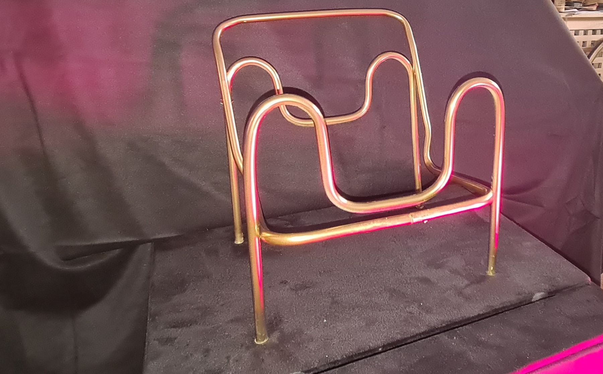

Inspired by Bauhaus
The Wassily chair, rebuilt as an interactive composition in a kitsch, material world.

An interactive composition built from three elements: 3D visuals, sound and electromechanics. It centres on Marcel Breuer's iconic Wassily chair, set inside a kitschy, materialistic world, and carries the essence of that piece of furniture into a new, digital context.
- Year
- 2022
- Medium
- 3D visuals, sound, electromechanics
- Context
- Interactive/Media/Design, KABK